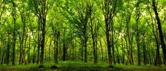
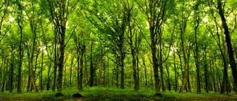

Projet professionnel
Pour ma part, mon projet professionnel c'est en partis construit lors de mon stage de 3ème que j'ai réalisé dans la division Informatique du Conseil Régional. Je pense qu'avoir vu le quotidient d'informaticien pendant plusieurs semaines ainsi qu'avoir vu les différentes activités qu'ils exercent et avoir découvert le monde de l'informatique m'a beaucoup plus.
Grace à ça, je savais qu'après ce stage je m'orienterai dans des études en Informatiques et plus spécifiquement dans la partie Cybersécurité.
Ainsi, après ma 3ème, j'ai intégré une Seconde général et technologique pour ensuite m'orienter en première et terminale technologique en STI2D. Déjà à l'entrée du lycée je savais que je ne voulais pas faire que de la théorie, je voulais aussi faire de la pratique, d'ou le choix de partir en filière technologique.
En terminale, je me suis spécialisé dans l'informatique en choisissant l'option SIN (système d'information et numérique) et j'ai obtenu mon BAC Technologique avec cette option.
Après mon lycée je voulais continuer dans cette voix. Donc j'ai choisis d'intégrer un IUT pour faire un BUT Informatique dans lequel je suis toujours en formation. Je voulais m'améliorer et en apprendre plus sur ce monde numérique et surtout pratiquer. A terme, j'aimerai rejoindre une école d'ingénieur informatique après mon BUT pour devenir ingénieur ou expert en Cybersécurité.
 
